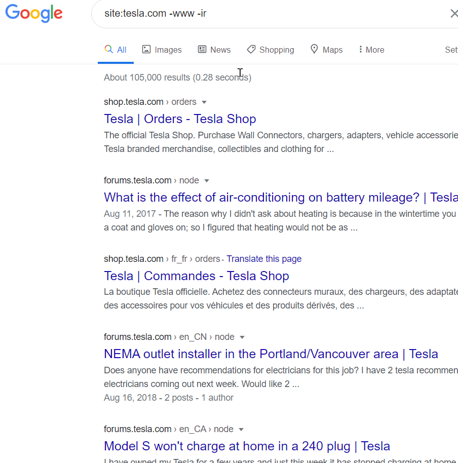

we could find subdomains with sublister crt.sh etc. Now we can find like this as well.
With that we are looking for some sensitive files or domains or information.
 a
a
Once Heath Adams find that a completely backup site for a website including source code etc. with google fu